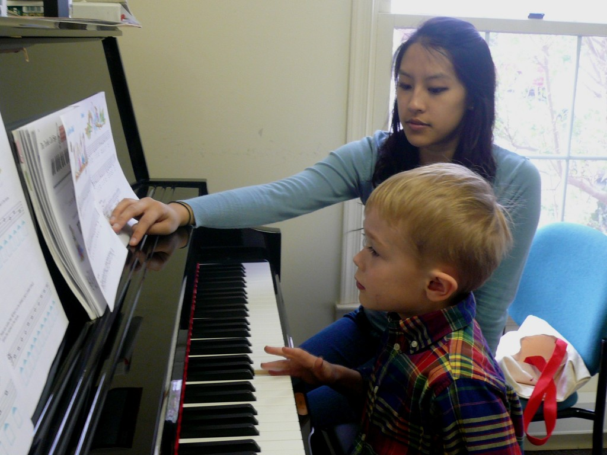
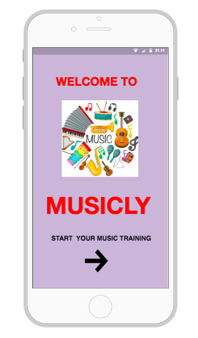
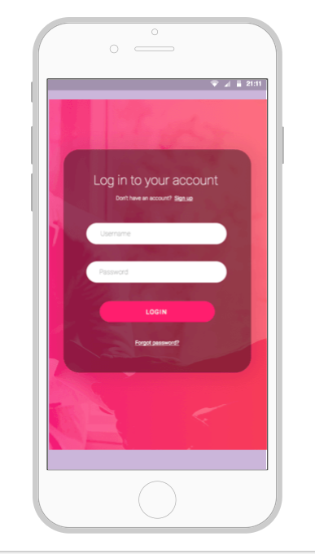
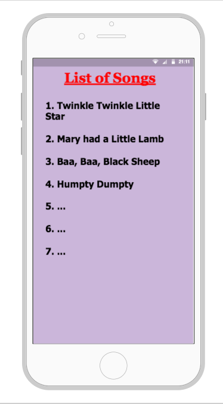
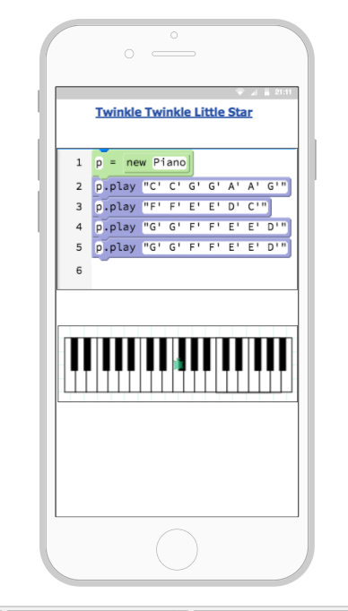
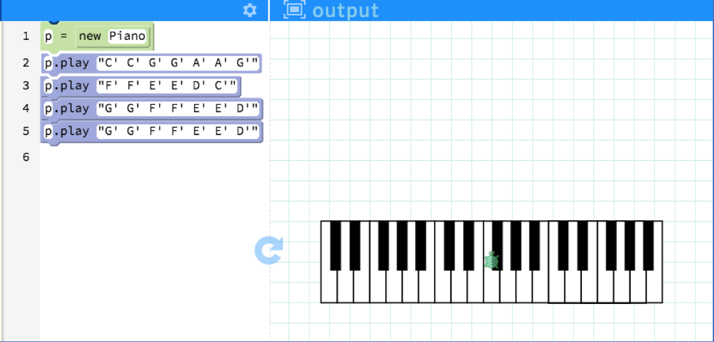

Problem
Decades of research has proven that music has a lot of positive benefits for children’s cognitive, emotional and psychological development. Not only does it help them become focused, calm and creative, music helps to strengthen neural connections in the brain which is beneficial for academic achievement & increased cognitive functioning.
A study by Kraus et al (2014) from Northwestern University suggested that “Children from disadvantaged backgrounds often face impoverished auditory environments, such as greater exposure to ambient noise and fewer opportunities to participate in complex language interactions during development. These circumstances increase their risk for academic failure and dropout. Given the academic and neural benefits associated with musicianship, music training may be one method for providing auditory enrichment to children from disadvantaged backgrounds. However, to fully reap the cognitive benefits of a music class, kids can’t just sit there and let the sound of music wash over them. They have to be actively engaged in the music and participate in the class. It is only through the active generation and manipulation of sound that can rewire the brain which implies that playing a musical instrument is very important.”
Thus, children have to be given opportunities to learn and practice musical skills in order to enhance their creativity as well as critical thinking skills. But the question is how do we make it accessible for people who don’t have the luxury to practice playing a musical instrument at home? That is what the product is trying to achieve through its design and accessibility stand-point.
Solution
Musicly is an interactive app designed for for children to virtually practice piano lessons without having access to the actual musical instrument.
.
Target Audience
- Children in the age range of 5-11 years can use this product.
- Children from different cultural and social-economic backgrounds can easily use this platform.
- Beginners or children who have no experience with the musical instrument can also use this app.
Learning Goals
- Practice Piano Lessons anywhere and anytime.
- Learn and rehearse musical notes for different songs.
- Experiment with different musical notes even without having an instrument in hand.
Product Demonstration
User Persona & Scenario
Harry, a 6-year old boy has recently started taking piano lessons in school during his recreational activity period. Although he enjoys playing the piano, he has a hard time learning musical notes for the songs. There are two reasons for this problem:
- He doesn’t have a piano at home to practice those lessons;
- He is not a rote learner and which makes it difficult for him to memorize musical notes, especially when the song is beyond 7-8 lines.
Day-by-day, he was getting discouraged and could not enjoy his passion for playing the piano. His music teacher realized that he needed some alternative which solves the issue by being accessible and also provides strategic memorization skills. He suggested the child ‘H’ to start using the Musicly app which will be available on all iOS and Android devices. This app will let him virtually practice piano lessons by visualizing which keys to press for every note and will also give an opportunity to experiment with those notes even when doesn’t have the actual instrument.

Mock-up of Digital Prototype
The following are the interactive features of the app which will assist the learning process for him:
- He can practice the lessons by actually visualizing the keys that will be pressed on the piano for every note of the song.
- He can also experiment with changing notes (adding or deleting different notes) to see the impact that will have on the sound produced.
- He can add/remove the apostrophe, set different bass and treble features for the notes and hear the sound on the app.
- With these types of interactive elements in the app, he will not only be able to simulate an actual experience of playing piano for himself but also memorize the notes even without having access to the instrument.




The interactivity in the app has been created using the software PencilCode which uses block-coding techniques based on JavaScript and CSS code structure. As mentioned earlier the interactivity in the Musicly app will be provided by using the PencilCode software as integration within the platform. The screenshot shows how the musical notes of a nursery rhyme (Twinkle Twinkle Little Star) will be written in code to practice the required lesson.

Here is the link to the song that will be played on the piano using the above notes:
Theoretical Framework
Design decisions & product mechanisms have been informed by the following learning theories:
Universal Design for Learning
Generative Learning Theory
Constructivism
Howard Gardener’s Multiple Intelligence Theory
For a detailed description of the project & references, please access the design document here.
Supervised by: Emily Reardon